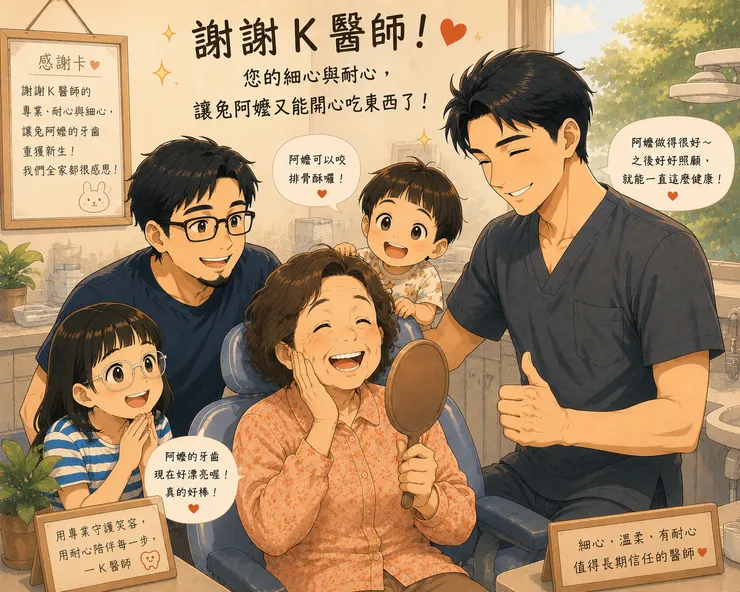

雞爸爸療程完成後沒多久，就換兔阿嬤的牙齒出問題了。而且這一次，問題比想像中還複雜。兔阿嬤有個習慣，就是愛用最後面的牙齒咬東西，很久以前就已經有一邊裝了牙套、另一邊則是三顆連在一起的牙橋，可能年久失修，已經有好一陣子，兔阿嬤一直說便當飯太硬，沒辦法咬。原本覺得只有一邊假牙有壞掉，先靠另一邊咬東西。兔阿嬤總是笑笑地說：「還可以吃啦。」誰知道時間一久，長期依靠單邊咀嚼，就連原本健康的那一側牙齒也開始痛了。雞爸爸知道，這次真的不能再拖了...

第一次看診，快得讓人來不及思考
因為現在兔阿嬤住得離K醫師診所比較遠，雞爸爸便先就近找一間牙醫診所。一走進去，就覺得這間診所有點特別。櫃檯和診療區雖然隔開，但裡面除了 X 光室之外，是一個開放式空間，三張診療椅一字排開。
醫師坐著有輪子的椅子，在三個診療台之間滑來滑去。
不知道為什麼，雞爸爸第一個想到的竟然覺得像髮廊。
只是今天不是來洗頭，而是來看牙啊?
拍完 X 光後，醫師很快開始說明。兔阿嬤原本那組三顆牙橋需要全部重做。
另外還有兩顆牙，評估需要植牙。若單看牙齒的狀況，這樣的判斷似乎並沒有什麼問題。
畢竟兔阿嬤真的拖了很久，牙齒的狀況也已經不輕。
只是…整個過程實在太快了。
快到還沒完全理解自己的牙齒發生了什麼事，就已經請我們到櫃檯安排後續治療。
雞爸爸心想，既然今天都來了，至少先把基本的事情處理一下，便問醫師：
「那今天可以先幫兔阿嬤洗牙嗎？」
醫師回答：「今天沒有預留洗牙的時間。」
沒有誰對誰錯，只是彼此看診的節奏，好像沒有對上。
站在櫃檯前，雞爸爸和兔阿嬤互相看了一眼。
「那我們先不要今天決定，好不好？」兔阿嬤點點頭。
於是，我們沒有直接預約療程，而是決定，再找另一位醫師看看。
有些距離，值得多開半小時
隔天，我們多開了半個小時的車，來到雞爸爸一直信任的 K 醫師診所。
K 醫師沒有急著安排治療，而是仔細檢查、耐心說明兔阿嬤全部牙齒的狀況。
再慢慢地跟兔阿嬤討論，依照他的規畫，接下來的療程如果這樣安排是否適當。
因為牙齒問題不少，整個療程預計要七、八次回診，
兔阿嬤了解醫生整體的規劃，也溝通一些細節，做了些調整和確認後，感覺也比較放心。
眼見一切順利，雞爸爸以為，只要照著計畫慢慢完成就好。
沒想到，真正的挑戰，竟然是在療程進行到一半才出現。
每顆牙齒，都有自己的故事
在其中一次的療程中，K 醫師準備拆除兔阿嬤原本的牙橋。
結果怎麼拆，就是拆不下來。
花了不少時間後，才慢慢發現原因。
原來很多年前，兔阿嬤就曾經因為咬合力量太大，把牙橋咬鬆、甚至咬壞。
當時的醫師為了固定牙橋，用了大量黏著材料，把整組牙橋幾乎「黏死」。
這些事情，不會出現在 X 光片上。
也沒有人第一次看診就會知道。
所以 K 醫師真正花最多時間的，不是重新做牙橋。
而是耐心地把那些累積多年的黏膠，一點一點清乾淨。
原本預計一個小時的看診時間，花了一整個下午，甚至是整個療程中最辛苦的。
雞爸爸站在旁邊，看著這一幕，突然很有感觸。
有些問題，不是第一次看診就能知道答案。
很多事情，都是在一次又一次治療的過程中，才慢慢拼湊出完整的樣貌。
一副臨時假牙，看見的是醫師的細心
完成第一階段治療後，兔阿嬤先裝上了臨時假牙。
K 醫師提醒：「先不要咬太硬的東西。」
看來只是一句再簡單不過的提醒，
結果隔天，兔阿嬤去吃了一碗排骨酥麵...
臨時假牙就斷掉了...兔阿嬤急得不得了。
一直擔心會不會有東西跑進去，要趕快重做一顆，雞爸爸趕快打電話給 K 醫師。
原本以為只能另外安排時間，沒想到 K 醫師特地挪出空檔，請兔阿嬤直接過去。
檢查後，K 醫師笑著說：「不用擔心，沒有影響主要結構。」
兔阿嬤終於鬆了一口氣。
但 K 醫師沒有因此結束看診，他重新觀察兔阿嬤的咬合方式，回想整個療程中的細節。
最後決定，重新製作齒模，並要求把製作到一半的牙套做完後直接重新送回技工所，
再依照兔阿嬤的咬合習慣重新調整，不然可能正式的牙套也容易因為咬合習慣壞掉。
K 醫師也跟我們說，裝牙套的時間可能會延後幾天。
那一刻，雞爸爸才明白。
真正細心的醫療，不只是把東西修好。
而是願意因為病人的使用習慣，再多做一步。
多花點時間看見問題背後的問題 才能安心
以前雞爸爸總覺得，第二意見，是因為不相信第一位醫師。
現在才慢慢理解。
第二意見，不是不相信。
而是在重要的治療開始之前，給自己多一點時間理解，也多一份安心。
回頭想想。
第一間牙醫看到的是兔阿嬤牙齒「現在」的樣子。
而 K 醫師，是在七、八次療程中，慢慢認識了兔阿嬤牙齒「過去」的故事。
兩者並不對立。
只是站在不同的時間點，會看見不同的資訊。
雞爸爸也因此更相信一件事。
真正值得信任的醫師，不只是會看 X 光片。
更願意陪著病人，一層一層解開那些累積多年的問題。
有些距離，看起來只是多開半個小時。
但如果能換來一位願意陪你走完整個療程、理解你的醫師。
那半個小時，真的很值得。
